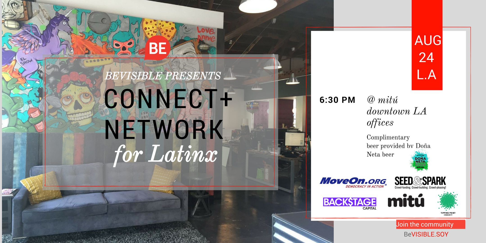

BeVisible Latinx
Internship Summer 2017
BeVisible is astart-up based in Colorado. They are an opportunity network for the Latinx community, combining the professional opportunity of a product like LinkedIn with a relatable and real community.
I started working with BeVisible to help them create more of a brand identity and a more cohesive theme. The team worked remotely so we had to coordinate over hangouts and slack about the different assignments. Many of the assingments were for marketing materials for events on social media. We tracked engagement with different graphics over our Facebook page and would keep successful designs after testing. In terms of brand vision, we discussed that there seemed to be a lack of stock photos and images that portrayed professional young Latinx people. I gathered many assets and even took photographs at events to create more of a base for future use. I also helped develop a guide of fonts, headings, and colors that we agreed had brand fit.
Technologies used were Adobe Photoshop and Canva (for collaborative editing and sharing).
Problem
The problem I was trying to solve was increasing engagement and visibility for the start-up. Goals for the project were to:
- Gain social media interaction.
- Create a more cohesive brand guidelines.
Research
I looked at the files that the previous graphic designer had provided and talked to the CEO and the Community Engagement Manager to get a better idea of the brand’s history. The pain points they had mostly concerned having icons that were not as specific to the brand and an inconsistent use of styles.
Metrics
We measured engagement through the facebook page insights and the click through rate of links. From a redesign of the job post graphic, we increased engagement.
Results
Some big takeaways I got were that it was not just the graphics that mattered but also the content that was posted along with the graphic.The voice of the startup was expressed directly through the text. It is also difficult to collaborate without brand guidelines and a way of tracking projects, that is why I created a brand page and suggested using trello for keeping the project to dos.
